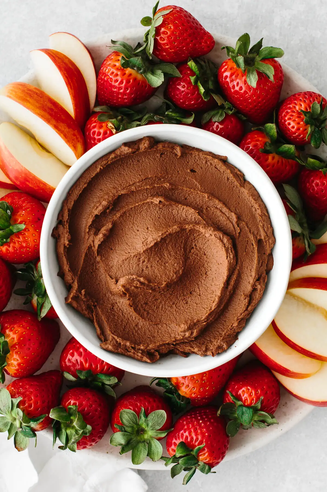

A weird recipe that make you not ask if there are worse rarer recipes
HOWEVER, according to what I saw, it might be better than it seems at
first glance.
As a big fan of Roquefort-Banana pie,
It attracted my curiosity enough that I wanted to put it on my recipe list.
Ingredients
- 1 can of black beans
- 3 1/2 tablespoons of regular/dutch cocoa powder
- 1/2 cup of sweetener of your choice
- 1/3 cup of the fat source of your choice (maybe even pure fat idk)
- 1/4 teaspoon of salt
- 2 teaspoon of pure vanilla extract
- optional chocolate chips or add-in of choice
Recipe directions
- Drain and rinse the chocolate beans well.
- Combine all ingredients except add-ins in a food processor until completely smooth like brownie batter.
- Stir in chocolate chips if using.
- Leftovers can be covered and refrigerated 4-5 days.